Connectors
This page aims to provide a comprehensive description of the cable connectors used in the rover and instructions on how to use (and assemble) them correctly. Connectors that are not explicitly listed in this article should be avoided in the rover wiring.
Contact gender¶
Data and power cables use different connectors to prevent short circuits and assembly mistakes. The scheme follows a general rule that all sources of voltage have female connectors, whether they are on board or a wire. This setup minimizes the risk of a short circuit caused by loose metal objects dropped inside connectors. The idea is shown in the picture below.
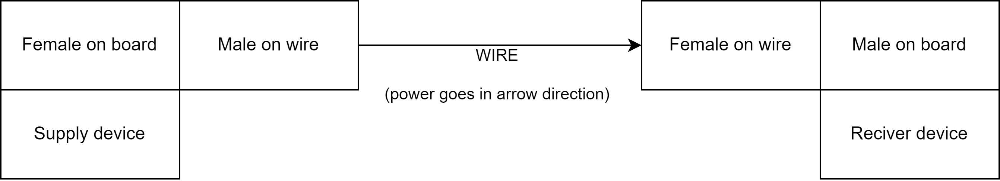
Male and female connectors¶
Please note that a male connector has a metal pin that goes inside the metal shield of a female connector. Non-conductive parts of connectors do not matter. In case of any doubt, refer to the connector tables below.
Phoenix – main power¶
We use Phoenix terminal blocks to distribute the main power to every component of the rover. It provides battery voltage directly. Do not connect those connectors to any other voltage source, as it may easily lead to mistakes that will damage the rover. If battery voltage is unsuitable for your design, consider using 5V distributed alongside the CAN bus or integrating a voltage converter directly into your module.
Polarization¶
| Male (reciver) | Female (source) | |
|---|---|---|
| Wire | 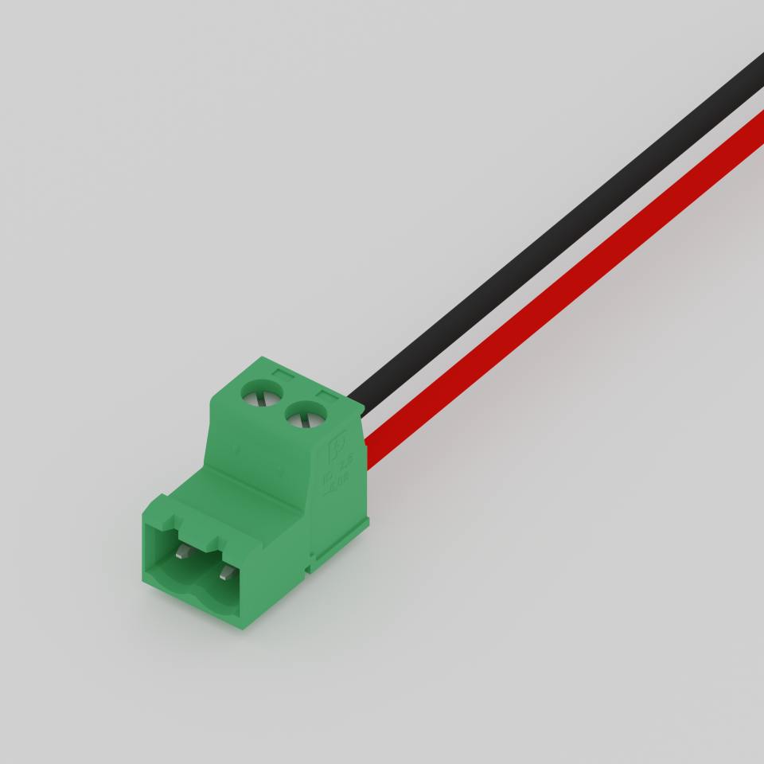 IC 2,5/ 2-ST-5,08 |
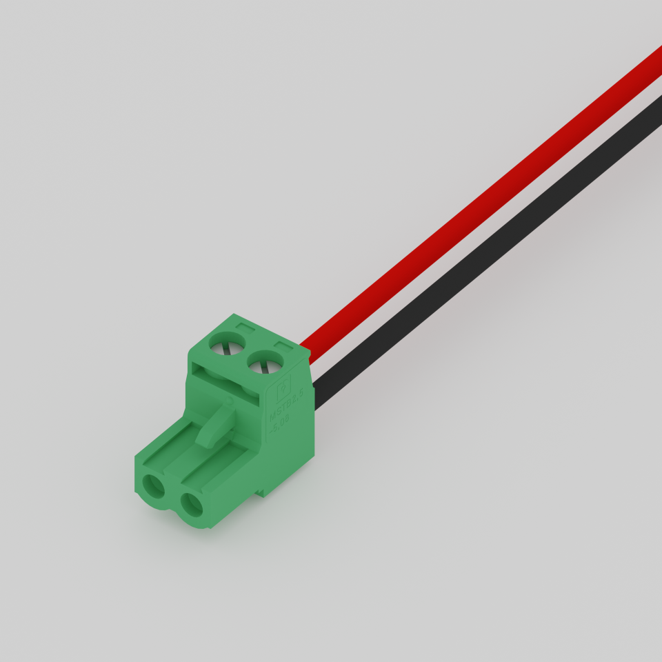 MSTB 2,5/ 2-ST-5,08 |
| Board | 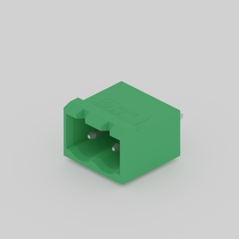 MSTBVA 2,5/ 2-G-5,08 |
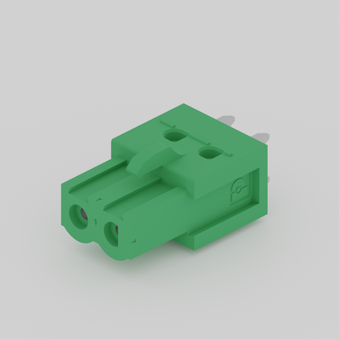 ICV 2,5/ 2-G-5,08 |
Assembly¶
All stranded (multiple thin wires inside one coating) wires cooperating with Phoenix connectors should end with end sleeves. This prevents wires from falling off the connectors and making short circuits on circuit boards. It also boosts the durability of the wire. When applying new end sleeves, pay attention not to bend or twist wires, as they would not fit correctly.
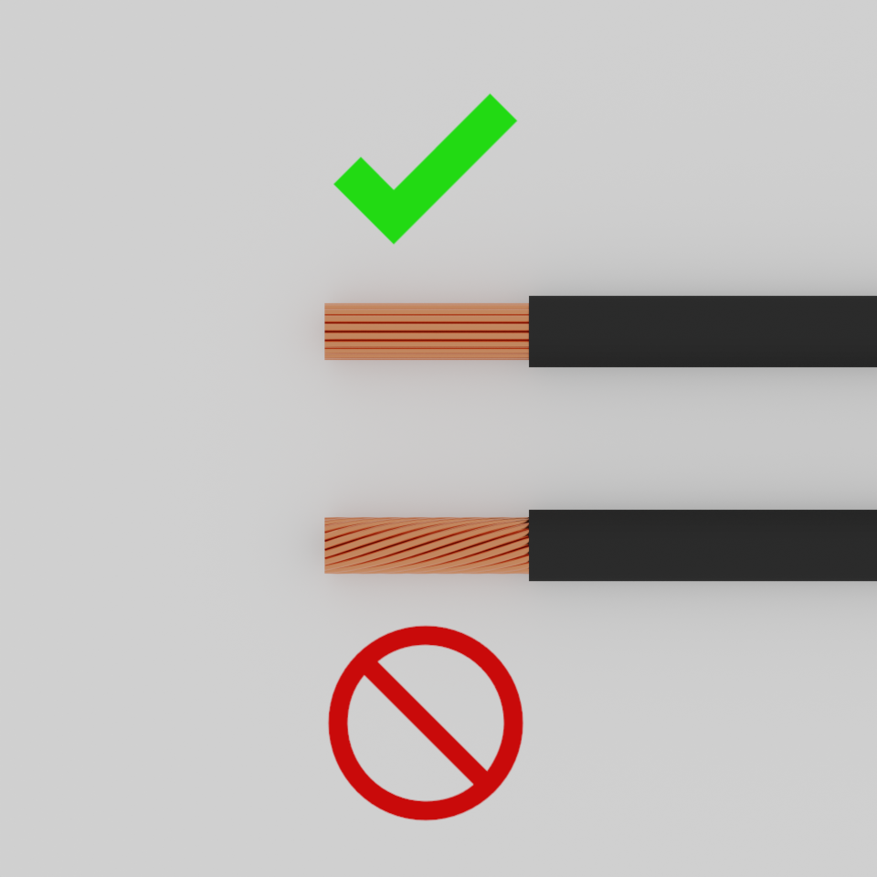
The metal part of the sleeve should not be longer than the wires inside. See the pictures below for visual reference.
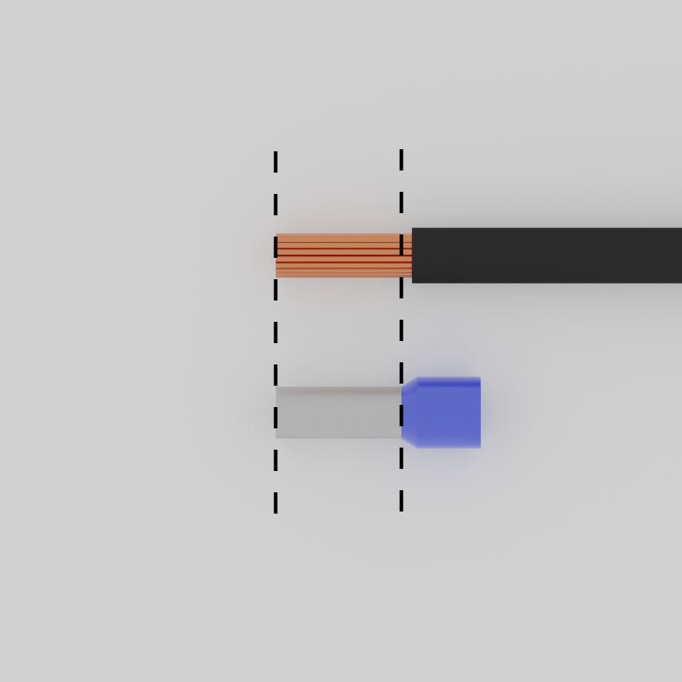
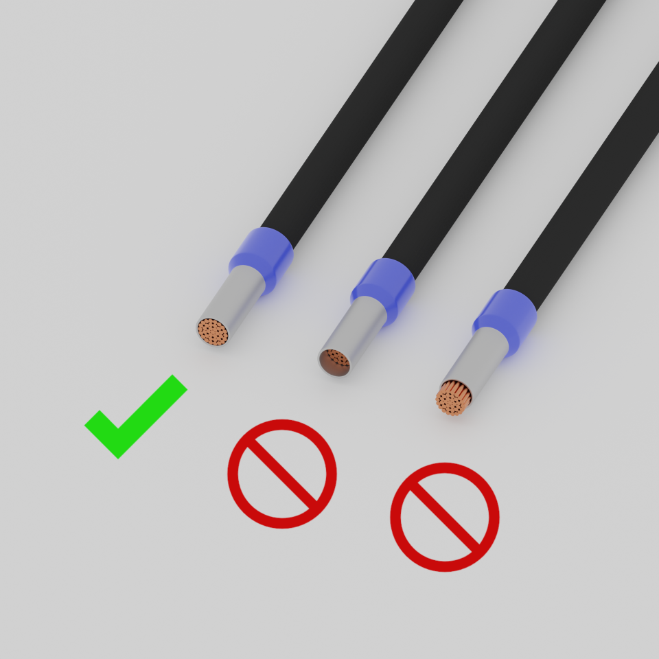
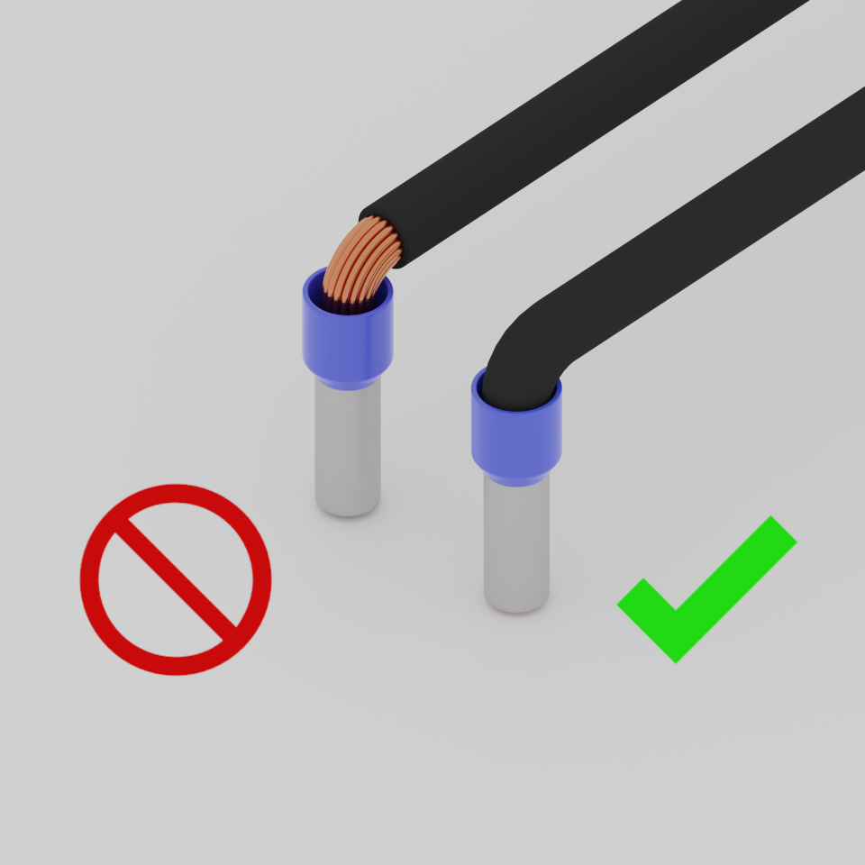
It is also a good idea to check after assembly if wires stay firmly deep inside connectors. Connectors should not hold only the very end of wires.
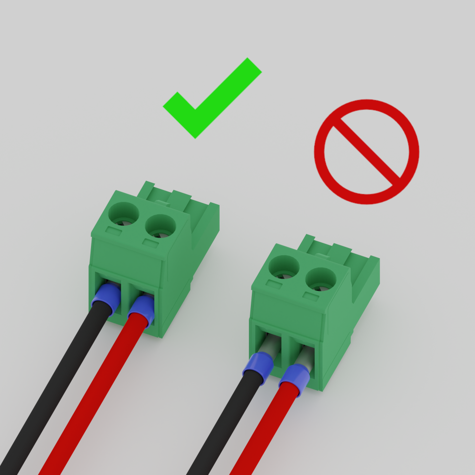
Micro-MaTch and IDC – CAN bus and 5V power¶
These connectors are used to create a CAN bus on the rover and, at the same time, power low-current devices with 5V. If you require more than 2W, use another power source.
Polarization¶
| Male (receiver) | Female (source) | |
|---|---|---|
| Wire | 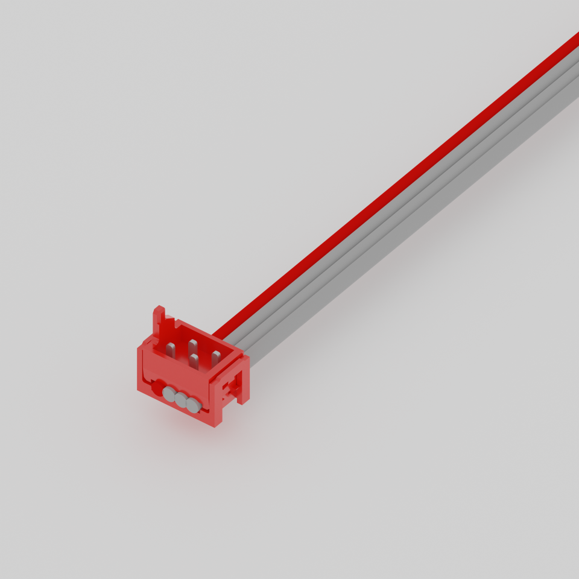 Micro-MaTch |
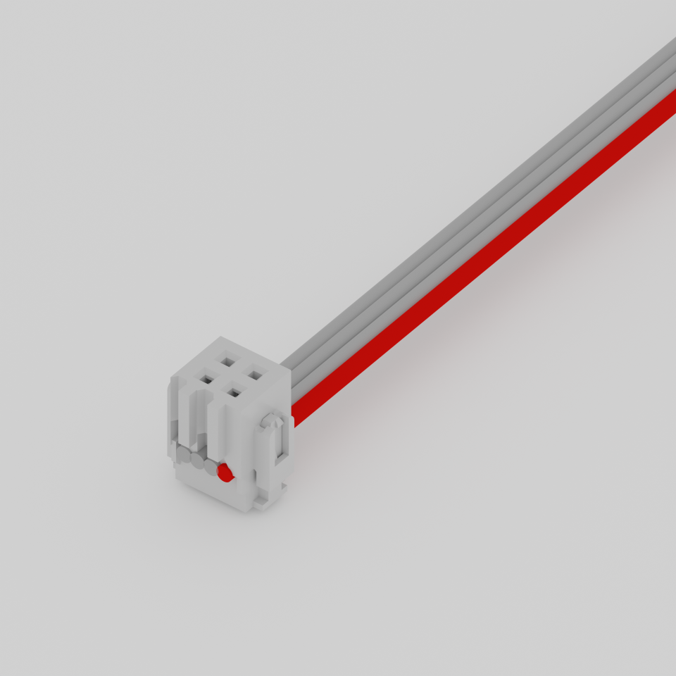 IDC |
| Board | 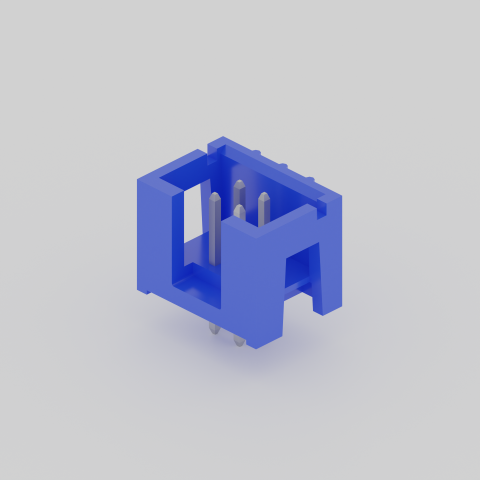 IDC |
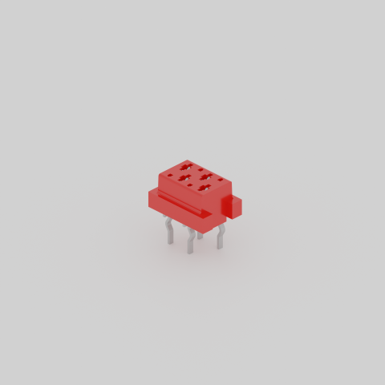 Micro-MaTch |
Pinout¶
| Pin index | Purpose |
|---|---|
| 1 | GND |
| 2 | DATA- |
| 3 | DATA+ |
| 4 | VCC |
When making data cable, please ensure that you are using a ribbon cable with the first wire (corresponding to the first pin in each connector) marked, as shown in the pictures above. It is the ground wire. The specific colour does not matter. It just has to be different from the rest of the wires.
Splitters and extenders¶
In general, there is rarely a need to add splitters. You can clamp an additional female IDC connector anywhere on an already-used ribbon. However, if you require a splitter or extender, you need to use a PCB, as there are no female Micro-MaTch connectors for wires. A PCB extender or splitter would have one IDC male connector and one or more female Micro-MaTch connectors.
USB – data and 5V power¶
Currently, USB is used to power and communicate with some devices on the rover, such as:
- Cameras
- Older modules that will be replaced in the future to add CAN bus support
- COTS devices that do not support CAN bus
New devices and modules, should use USB C (preferably) or USB A (less preferably). Unfortunately, some COTS devices may only be available with other types of USB connectors (e.g., micro USB). Try to avoid them when possible.
Do not attempt to power modules with high power requirements using USB. Assume that:
- USB 2 can deliver 2.5W
- USB 3 can deliver 7.5W
Many other standards (Quick Charge or Power Delivery) make it possible to draw higher power, but they require a power supply that supports these standards. Such sources are not available on the rover. If you need more power, use the battery voltage directly (see battery voltage).
8P8C (often called RJ45) – Ethernet¶
Ethernet cables are currently used only to connect antennas to the onboard computer. However, other devices can be connected if they require network connectivity. Possibly in the future, cameras will use high-speed Ethernet to overcome the bandwidth limit of USB 2 and perhaps offload the onboard computer.